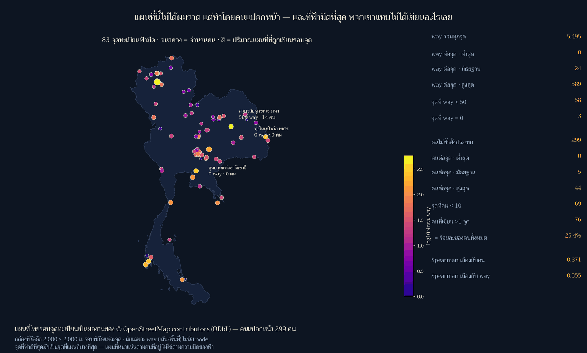
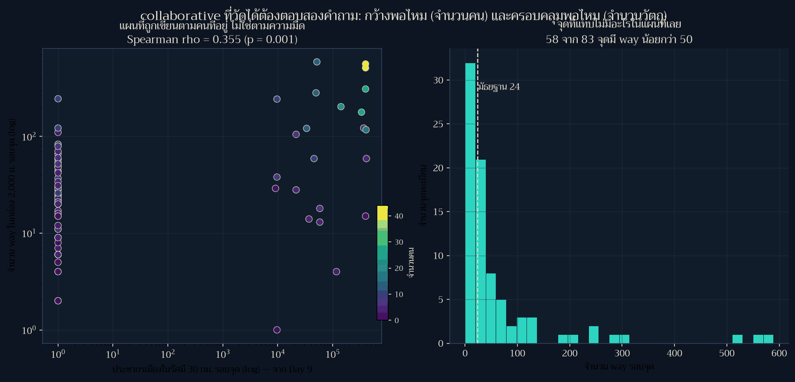
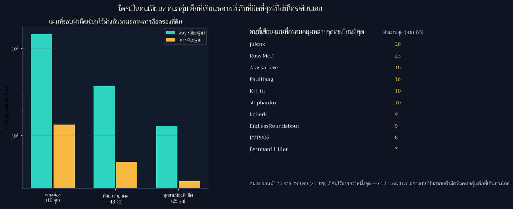

Day 16 · Collaborative map — วัดว่าใครเขียน OpenStreetMap รอบจุดทะเบียนฟ้ามืด 83 จุด แล้วพบว่าที่ฟ้าดีที่สุดคือที่ที่แผนที่บางที่สุด

โจทย์ทางการวันนี้คือ “Do a map with a friend, colleague or a stranger. AI doesn’t count as a friend :)” (หัวข้อ Collaborative map — ดึงข้อความมาจากหน้า 30daymapchallenge.com อ่านสดตอน 07:00 ของวันที่ 17)
บอกตรง ๆ ก่อนเริ่ม: แผ่นนี้ทำและลง เช้าวันที่ 17 พ.ย. สำหรับโจทย์วันที่ 16 เพราะคืนวันที่ 16 ผมลองวัด สองทางแล้วพังทั้งสองทาง (บันทึกไว้ในหัวข้อ “สองครั้งที่พัง” ข้างล่าง) และผมไม่สมมติว่า AI เป็นผู้ร่วมทำงาน ตามที่เขาเขียนกำกับไว้ทางเดียวที่เหลือคือ ทำแผนที่ที่ เป็น collaborative อยู่จริงและพิสูจน์ได้ นั่นคือวัดว่าใครเป็นคนเขียนแผนที่รอบจุดที่ผมใช้มาทั้งซีรีส์
คำถาม: แผนที่รอบฟ้ามืดของไทย ถูกเขียนโดยคนแปลกหน้ากี่คน — และที่ที่ฟ้าดีที่สุด มีคนเขียนไว้แค่ไหน
ที่มาของแผนที่
ตัววัดคือ OpenStreetMap — แผนที่ที่คนแปลกหน้าเขียนกันเอง ผมดึงผ่าน Overpass API ด้วยนิยามที่เขียนไว้ชัด ๆ (และตรงกับโค้ด) ว่า
way(เส้นและพื้นที่) ที่ จุดศูนย์กลางของ way อยู่ภายใน 1 กม. จากพิกัดจุดทะเบียน นับเฉพาะ way ไม่นับ node · snapshot เวลา 07:40–08:10 น. ของวันที่ 17 พ.ย.
แล้วผูกกับของเดิมในซีรีส์โดยไม่คำนวณซ้ำ: ประชากรเมืองรอบจุดจาก Day 9 (urban_pop_30km) และผู้ถือครองที่ดินจากฟิลด์ type ของทะเบียน (ย่อตาม Day 12 — นับได้ 43 จุดที่เป็นที่ดินส่วนบุคคล ตรงกับที่ Day 12 รายงาน)
ผลลัพธ์

| ตัวเลข | ค่า |
|---|---|
| way รวมทุกจุด | 5,495 ชิ้น |
| way ต่อจุด · ต่ำสุด / มัธยฐาน / สูงสุด | 0 / 24 / 589 ชิ้น |
| จุดที่มี way น้อยกว่า 50 | 58 จาก 83 จุด |
| จุดที่ไม่มี way เลย | 3 จุด |
| คนแปลกหน้าที่ไม่ซ้ำกันทั้งประเทศ | 299 คน |
| คนต่อจุด · ต่ำสุด / มัธยฐาน / สูงสุด | 0 / 5 / 44 คน |
| จุดที่มีคนน้อยกว่า 10 | 69 จุด |
| คนที่เขียนไว้มากกว่าหนึ่งจุดทะเบียน | 76 คน = 25.4% ของทั้งหมด |
สามจุดที่ ไม่มีอะไรในแผนที่เลย (ชื่ออ่านจากไฟล์ CSV ไม่ใช่ถอดจากภาพ): ทุ่งโนนป่าก่อ เขตรักษาพันธุ์สัตว์ป่าภูสีฐาน (มุกดาหาร) · อุทยานแห่งชาติเขาใหญ่ (นครราชสีมา) · หอดูดาวเฉลิมพระเกียรติฯ สงขลา (สงขลา) — จุดสุดท้ายคือจุดเดียวกับที่ Day 14 พบว่า พิกัดของมันอยู่นอกเส้นขอบประเทศใน Natural Earth 10m วันนี้มันหายไปจากแผนที่อีกครั้ง ในความหมายที่ว่าไม่มีใครเขียนอะไรไว้รอบตัวมันเลย
สามจุดที่เขียนเยอะที่สุด: สวนวลัยรุกขเวช มหาวิทยาลัยมหาสารคาม 589 way จาก 14 คน · อุทยานดาราศาสตร์สิรินธร (เชียงใหม่) 561 way จาก 42 คน · สิริน วิลล์ แม่ริม 511 way จาก 44 คน สังเกตว่าจุดที่ คน เยอะที่สุด (42–44 คน) ไม่ใช่จุดที่ way เยอะที่สุด (14 คนเขียน 589 ชิ้น) — แผนที่ตรงนั้นเขียนโดยคนกลุ่มเล็กแต่วัตถุเยอะ ส่วนอีกที่เขียนกระจายกันคนละนิดคนละหน่อย
แผนที่หนาแน่นตามคนที่อยู่ ไม่ใช่ตามความมืดของฟ้า

สหสัมพันธ์อันดับระหว่างประชากรเมืองรอบจุด (Day 9) กับปริมาณแผนที่: Spearman rho = 0.355 (p = 0.001) และกับจำนวนคน: rho = 0.371 (p = 0.00055) — n = 83 จุด กล่าวคือจุดที่อยู่ใกล้เมืองยิ่งมีแผนที่หนาแน่น ซึ่งแปลเป็นภาษากลับกันว่า ที่ที่ฟ้ามืดที่สุด คือที่ที่แผนที่บางที่สุด และนี่ไม่ใช่เรื่องเล็ก เพราะจุดที่ผมใช้วัด “ความมืด” ทั้งซีรีส์ตั้งอยู่บนแผนที่ที่ถูกเขียนน้อยลงเรื่อย ๆ ตามที่มันมืดลง
ใครเขียน — คนกลุ่มเล็กที่เดินทางไกล

เมื่อจัดกลุ่มตามสภาพการถือครองที่ดินของ ตัวจุดทะเบียน ค่ามัธยฐานของ way และจำนวนคนเป็นดังนี้
| ผู้ถือครอง (type ของทะเบียน) | จำนวนจุด | way · มัธยฐาน | คน · มัธยฐาน |
|---|---|---|---|
| พื้นที่ชานเมือง | 10 | 147.5 | 13.5 |
| ชุมชนอนุรักษ์ | 2 | 43.5 | 6.0 |
| ที่ดินส่วนบุคคล | 43 | 37.0 | 5.0 |
| อุทยานแห่งชาติ | 2 | 14.5 | 3.5 |
| อุทยานท้องฟ้ามืด | 25 | 13.0 | 3.0 |
| ส่วนบุคคล + ชุมชน | 1 | 11.0 | 1.0 |
จุดที่เป็น อุทยานท้องฟ้ามืด — หมวดที่สถานะการปกป้องฟ้าดีที่สุดตามทะเบียน — มีแผนที่รอบตัว เพียง 13 ชิ้นต่อจุด เทียบกับพื้นที่ชานเมือง 147.5 ชิ้น (ต่างกันราว 11 เท่า) และจำนวนคนเฉลี่ยแค่ 3.0 คนต่อจุด
ส่วนคนที่เขียนครอบคลุมหลายจุดที่สุด: julcnx 26 จุด · Russ McD 23 · AlaskaDave 18 · PaulHaag 16 · Kri_ttt 10 · stephankn 10 (จาก 83 จุด) — 76 จาก 299 คนเขียนไว้มากกว่าหนึ่งจุด แปลว่า collaborative ของแผนที่ไทยรอบฟ้ามืด พึ่งคนกลุ่มเล็กที่เดินทางไกล มากกว่าชุมชนท้องถิ่นของจุดนั้น
สองครั้งที่พัง (และกลายเป็นส่วนหนึ่งของโพสต์)
- Overpass คืนคอลัมน์ว่าง — query ที่จบด้วย
out;ไม่ส่งuser/timestampมาให้ ต้องเป็นout meta;ผมจึงมีไฟล์แคช 42 ชุดที่ “ไม่มีคน” อยู่ในนั้นทั้งที่มี way เต็มไปหมด และกว่าจะเห็น ผมก็เอาไปคำนวณทั้งชุดแล้วรอบหนึ่ง (ไฟล์ครั้งนั้นถูกตั้งชื่อINVALID_*ไว้ในout/day16/) - วัดด้วย changesets API แล้วทิ้ง — คืนวันที่ 16 ผมสวิตช์ไปใช้
changesets?bbox=เพราะ Overpass ไม่ตอบ แต่ bbox ของ changeset คือขอบเขตของ ทุกสิ่งที่คนนั้นแก้ในครั้งเดียว ซึ่งมักครอบคลุมทั้งประเทศ ผลคือจุดใต้สุดกับจุดเหนือสุดที่ห่างกัน 1,463 กม. ยังแชร์ changeset กัน 44 จาก 100 ชุด และจำนวน changeset ที่อยู่ในกล่องจริงต่อจุด มีค่าต่ำสุด 0 · มัธยฐาน 0 · สูงสุด 39 จาก 100 ตัวเลขที่ออกมานึกว่าวัดได้ (172 คน / 1.6 ล้านครั้ง) จึงไม่ใช่ความจริงเกี่ยวกับสถานที่ แต่คือความจริงเกี่ยวกับ ขอบเขตของ changeset - Overpass ล่มช่วงดึก —
overpass-api.deไม่ตอบจากเครื่องนี้ทั้งคืน mirror บางตัวตอบ แต่ field ว่าง เช้าวันที่ 17 จึงรันใหม่แบบรวมชุด (3 จุดต่อ query) และข้ามชุดที่ทำแล้ว ใช้เวลาเก็บข้อมูล 83 จุดประมาณ 40 นาที
วิธีทำแบบย่อ
- อ่านทะเบียน 83 จุด + กริด Day 3 +
urban_pop_30kmจาก Day 9 tools/collect_day16_osm.pyยิง Overpass แบบรวมชุดด้วย[out:csv(::id,::user,::timestamp,::lat,::lon,false)] ... out center meta;แล้วจับคู่ way กับจุดด้วย จุดศูนย์กลางของ way (กัน way ยาว ๆ ที่ลากผ่านหลายกล่อง) ผลเก็บในcache/day16/way_all.jsonพร้อม resumetools/day16_collaborative.pyนับ way / คน / ส่วนแบ่งอันดับหนึ่ง ต่อจุด แล้วคำนวณ Spearman กับประชากรเมือง และจัดกลุ่มตาม type ของทะเบียน--compareวัดเทียบนิยาม “แตะกล่อง” กับ “จุดศูนย์กลางในกล่อง” ที่ 3 จุด- ตรวจ:
guard_bbox·guard_crs·guard_variance· assert ว่าคน ≤ way, assert ว่าผลรวมไม่ซ้ำ ≥ จุดที่มากที่สุด,lint_thai+ สแกน unicode ทั้งไฟล์
ข้อจำกัดที่ต้องบอกตรง ๆ
- นิยาม “ในกล่อง” ต่างจากนิยาม “แตะกล่อง” — วัดเทียบ 3 จุด: ญาติกา บูทีค 62 way/12 คน (แตะกล่อง) เทียบกับ 44 way/9 คน (จุดศูนย์กลาง) · คชอาณาจักรสุรินทร์ 20/9 เทียบกับ 11/6 · เดอะทีค รีสอร์ท 140/12 เทียบกับ 121/11 ทุกจุดนิยามที่ผมใช้ให้ค่าน้อยกว่า และมี way อีก 806 ชิ้น ที่ถูกทิ้งเพราะแตะกล่องแต่จุดศูนย์กลางอยู่นอก 1 กม.
- นับเฉพาะ way ไม่รวม node (ถนนเส้นหนึ่งเป็น node ได้เป็นหมื่นจุด) ตัวเลขจึงไม่ใช่ “ปริมาณข้อมูลแผนที่” แต่เป็น “จำนวนวัตถุที่คนวางไว้”
- timestamp คือเวลาแก้ ล่าสุด ของวัตถุ ไม่ใช่เวลาสร้าง — คอลัมน์
yearsในday16_sites_osm.csvจึงเป็นช่วงปีของ “การแตะครั้งสุดท้าย” ไม่ใช่ประวัติการเขียน - snapshot เดียว ค่าจะเปลี่ยนเมื่อ OSM ถูกแก้เพิ่ม (รันซ้ำได้ แต่จะไม่ได้ตัวเลขชุดเดิม)
- ชื่อ username เป็นข้อมูลสาธารณะของ OSM ผมแสดงเฉพาะชื่อที่ระบบเปิดเผยและจำนวนจุด ไม่ได้เดาสัญชาติ อาชีพ หรือตัวตนจากชื่อ และไม่ได้ติดต่อใคร
- นี่ไม่ใช่แผนที่สำหรับใช้งาน และกล่อง 2×2 กม. อาจเล็กเกินสำหรับจุดที่อยู่ห่างถนนจริง (เช่นจุดบนเขา) ซึ่ง way แรกอาจอยู่ไกลกว่า 1 กม. แล้ว
- ผู้ร่วมทำงานเป็นมนุษย์จริงไม่ได้ ในความหมายของโจทย์ — คนที่ผม “ทำงานด้วย” คือ คนแปลกหน้า 299 คนที่เขียน OpenStreetMap โดยไม่รู้ว่ามีคนเอาผลงานเขาไปนับในเช้าวันหนึ่ง ข้อมูลทั้งหมดใช้ภายใต้ © OpenStreetMap contributors (ODbL)
ไฟล์ประกอบ
- day16_collaborative.png — แผนที่ 83 จุด ขนาดวง = จำนวนคน สี = ปริมาณแผนที่
- day16_who_draws.png — ประชากรเมือง ↔︎ ปริมาณแผนที่ และการกระจายของ way ต่อจุด
- day16_holders.png — เทียบตามสภาพการถือครองที่ดิน + คนที่เขียนครอบคลุมหลายจุด
- day16_sites_osm.csv — ทุกจุด: way, คน, อันดับหนึ่ง, ช่วงปี, ประชากรเมือง, ผู้ถือครอง
- day16_by_holder.csv — สรุปตามกลุ่มผู้ถือครอง
- day16_stats.json — ตัวเลขทุกตัว +
metric_definitions+scope_compare+ provenance


บทเรียน
- จับผิดตัวเองด้วยตัวเลข ไม่ใช่ด้วยความรู้สึก — ตัวเลข “299 คน / 5,495 ชิ้น” ฟังดูสมเหตุสมผล เหมือนกับ “172 คน / 1.6 ล้านครั้ง” ของวิธีที่พังเมื่อคืน ถ้าไม่มี assert ว่า จุดสองจุดห่าง 1,463 กม. ไม่ควรแชร์ข้อมูลกัน 44 ชิ้น ผมก็คงพิมพ์ตัวเลขชุดนั้นออกไปอย่างมั่นใจ
- API ที่ “ใช้ได้” ไม่เท่ากับ API ที่ “ตอบคำถาม” — changesets API ทำงานเร็วและคืนข้อมูลครบ แต่มันตอบคำถาม “ใครแก้บ้างในช่วงนี้” ซึ่ง bbox ของมันใหญ่เกินคำถามของผมไปทั้งประเทศ ความเร็วของแหล่งข้อมูลไม่ใช่หลักฐานว่าวัดถูก
- โจทย์ “ทำกับคน” สอนสิ่งที่โจทย์อื่นไม่สอน — ผมต้องยอมรับว่าตัวเองเป็นผู้ร่วมงานไม่ได้ และหาคำตอบว่า แล้วใครคือคนที่ทำงานนี้ด้วยจริง ๆ คำตอบคือคนแปลกหน้า 299 คน ซึ่งก็ตรงกับสิ่งที่แผนที่ใบนี้ว่าไว้ตั้งแต่ต้น: แผนที่ของประเทศนี้เขียนโดยคนไม่กี่คน ในที่ที่คนน้อยที่สุด